Lev
Tolstoï (1828-1910)


3. monade
hiéroglyphique [3.a entre chien
et loup - 3.b le champ de Mars - 3.c puissance des ténèbres -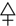
ou de mercure quand ils considèrent la forme
de la matière à une époque donnée du travail. L'étude se poursuit par
l'élaboration d'une nouvelle monade hiéroglyphique qui donne un sens
dynamogène à l'ensemble de l'appareil mercuriel considéré comme entité.
C'est d'abord le symbole de Mars qui est relu en liaison avec la triade
mythique Seth-Typhon, Moqtar et Nergal.
quand ils considèrent la forme
de la matière à une époque donnée du travail. L'étude se poursuit par
l'élaboration d'une nouvelle monade hiéroglyphique qui donne un sens
dynamogène à l'ensemble de l'appareil mercuriel considéré comme entité.
C'est d'abord le symbole de Mars qui est relu en liaison avec la triade
mythique Seth-Typhon, Moqtar et Nergal.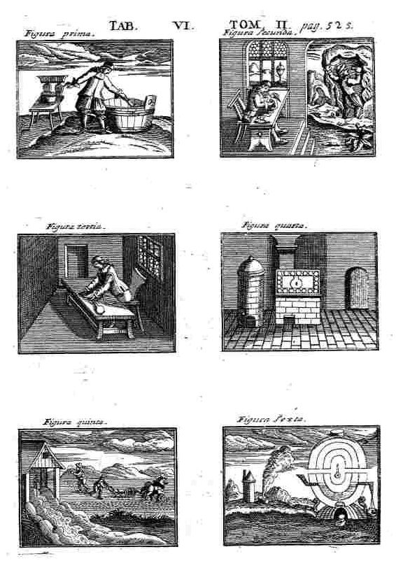
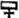
. Cette opération se déroule dans le vase de nature, i.e. athanor [vitri oleum] ou Mercure philosophique [on parle encore de double Mercure], ces termes étant semblables. J'ai déjà longuement évoqué le sel central dans la section précédente [cf. notamment II, 1, d] à propos de la limitation envisagée dans son acception critique, et développée en I, 6. La large bassine sur laquelle est penché l'Adepte évoque celle du Mutus Liber, servant à recueillir la rosée de mai [cf. planche 4]. Considérée de la sorte, la rosée de mai serait l'une des formes symboliques que prend l'eau mercurielle lors de la phase d'empâtement ; autrement dit, la captation de l'esprit vital par la vertu de l'Aimant [cf. II, 1, e] :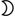
. On peut voir au plan symbolique, dans cette gravure, que la coagulation de l'eau mercurielle, suivant la sublimation, symbolise un processus d'inversion. Il n'est d'aucune façon propre aux arcanes alchimiques mais recouvre, plus largement, l'expression d'un archétype dont l'importance est fondamentale pour la philosophie critique ; on en trouve trace chez Rousseau :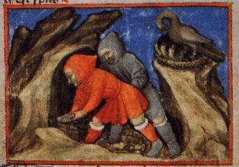
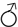
. Il s'agit d'une séparation mécanique effectuée entre des parties dont l'une est véritablement chérie par la magnétite [cf. R. Halleux, les Lapidaires Grecs, Belles Lettres, Orphei Lithica, p. 97 sq.]. On trouve une référence aux lettres M et S dans l'introduction à un traité du sieur de Nuysement, intitulé Traittez de l'Harmonie et constitution générale du vray sel... [Perier et Byisard, Paris, 1621] :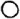
à l'albedo et cette transition porte un nom : c'est la sublimation. Autrement dit : c'est l'ellipse qui succède au cercle [cf. II, 1, d]. De ce point de vue, la sublimation correspond - au sens hermétique - à la naissance de la durée.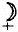
du Mercure préparé. Il est donc probable que l'Artiste a déjà disposé les deux natures, minérale et métallique, dans le matras. Ces deux natures ne sont pas encore à l'état de conjonction radicale mais seulement juxtaposées, un peu à la manière de deux idées avant que ne vienne la phase de concept. Cette dualité se retrouve en philosophie. dans
son premier état : c'est ce que les alchimistes nomment la ponticité du Mercure en affichant ainsi
son idéogramme 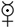
. Ce Soufre à la fois vif et cru précède - comme donne à l'entendre Orthelius - la « génération surnaturelle » du fils du .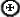
[cf. Azoth ; Aurora consurgens, I]. Je rappelle que l'Azoth ou Occulta philosophia est un traité d'alchimie que Fulcanelli attribue à Senior Zadith ; il contient un dialogue entre un vieillard - Senior - et un jeune homme, Adolphus. L'analogie permet de considérer que, alchimiquement parlant, Senior s'assimile à l'homme d'Athènes que je viens d'évoquer par la référence à Chestov ; qu'Adolphus s'assimile à l'homme de Jérusalem. Le sal nitri - i.e. l'Esprit universel - est représenté par la rosée de mai ou Air des Sages dont traite Philalèthe dans son Introïtus, VI. Dans le Ripley Scrowle, j'ai assimilé cette convection à la formation de Délos qui forme la partie du MOI directement en rapport avec la conscience « sensible ». Mais on peut aller plus loin : ce mouvement convectif doit être relié au temps, puisque la materia prima évolue dans l'athanor ; nous retrouvons au plan symbolique la figure d'un cercle évolutif : il s'agit d'une spirale [cf. II, 1, d].La grandeur extensive
représente une « quantité dénombrable », c'est-à-dire ce que l'on peut
essentiellement saisir par le sens compris - de façon restrictive -
comme entendement. La grandeur intensive procède de la notion plus
subtile de ce qui se rapporte à l'infinitésimal [A.
Philonenko, Kant, II, infiniment petit et grandeur intensive,
197, Vrin, 2003]. Un exemple pris dans le domaine du
symbolisme alchimique va permettre de comprendre ces concepts : soit le
symbole pris comme noumène. J'ai rappelé en I,
7, a la raison pour laquelle il faut y voir la représentation d'un
principe à l'état radical, au sens d'archétype [j'entends par là qu'on n'y peut point dissocier l'orbis
du punctum]. Ce
symbole peut être décrit en tant que grandeur extensive : c'est la teneur éidétique qui est
inscrite au cercle solaire ; c'est la part mercurielle que
les Anciens appelaient encore premier Mercure pour l'opposer au
second Mercure [qui est le Mercure philosophique ou double Mercure ].
Certains l'ont appelé « résine
de l'or » et ils ont souligné avec raison, par là,
sa forme substantielle. D'autres, jouant de cabale, l'ont nommé christophore selon la
légende du géant Offerus. Il a même servi de titre à l'un des plus
emblématiques des traités sur l'art chymique : le Splendor solis ou
Toyson d'or. Quoi qu'il en soit, pour l'hermétiste, il s'agit d'un objet
bien réel au sens où il est « actuellement » présent dans la masse
mercurielle [cf. section Mercure]
; et il s'agit bien d'un objet que l'on peut concevoir par le principe
d'entendement.
« Procéder du tout
vers les parties... c'est procéder... logiquement, si l'unité de ce
tout est celle d'un simple concept logique ou empirique de
l'entendement (sous la catégorie de la quantité).
» [Frank Pierobon, Kant
et les Mathématiques, la conception kantienne des Mathématiques,
période critique, p.100 sq.,
Vrin, 2003]
Mercurius recte &
chymice praecipitatus vel sublimatus, in sua propria Aqua
resolutus & rursum coagulatus
[Musaeum hermeticum, 353] - Bacstrom delincavit
Je rappelle ici le principe
fondamental de l'alchimie : en
to pan. J'en ai développé le sens ailleurs [1,
2, 3,
4, 5, 6, 7,
8, 9,
10] mais il me faut le
reprendre sous une autre orientation pour l'adapter à l'explicitation
des concepts de grandeur extensive et intensive. Cette formule ressortit
d'une « duplicité dans l'unité » et traduit comme
une sorte de complémentarité où, d'un côté, est visé un objet dans l'espace [cf.
la formulation platonicienne = Un le Tout] et d'un autre côté,
est visé un objet dans le temps
comme « un mouvement courant
en soi-même ». Cette contradictio
in adjecto trouve sa solution si l'on veut bien voir
que les objets évoqués sont des décalques du MOI et du NON
MOI fichtéen ; ou encore des dérivés du MÊME
et de L'AUTRE de Platon. Traduits en langage alchimique,
il s'agit des opposés sulfur
et sal
dont le médiateur - Mercurius
- assure la jonction. L'image de ces objets, focalisée par le prisme
mercuriel, correspond au symbole . La question
est de savoir ce qui, dans cette opération de « réfraction », peut être
rapporté - par analogie - à ce que Kant nomme la grandeur intensive et
la grandeur extensive.
Ce schéma est une
représentation du processus alchimique. À partir des relations
symboliques, il est possible d'établir une dynamique de liaison, en
sorte de saisir les concepts de grandeur intensive et extensive. Ce qui
est suggéré, c'est d'abord une symétrie autour d'un axe mercuriel .
Et c'est un cercle, celui de la nigredo où la
dynamique s'opère entre le facteur de la sublimation [ ] et celui de la projection [
] et celui de la projection [ ] - je
renvoie à la section Aurora consurgens
pour des explications là-dessus. Le temps est introduit dans ce système
par le symbole [i.e.
la dynamique, cf. Mutus
Liber] et l'ensemble porte, en alchimie, le qualificatif
d'ESPRIT. C'est encore, dans ce dispositif, le principe médiateur ou SEL
des Sages. De part et d'autre, le SUJET considéré sous l'espèce de la
dualité, enfin l'OBJET considéré dans l'unité. À présent, si j'envisage
l'intuition appliquée à
l'esprit, c'est déjà un pas que je réalise vers la grandeur intensive ;
voyons cela.
] - je
renvoie à la section Aurora consurgens
pour des explications là-dessus. Le temps est introduit dans ce système
par le symbole [i.e.
la dynamique, cf. Mutus
Liber] et l'ensemble porte, en alchimie, le qualificatif
d'ESPRIT. C'est encore, dans ce dispositif, le principe médiateur ou SEL
des Sages. De part et d'autre, le SUJET considéré sous l'espèce de la
dualité, enfin l'OBJET considéré dans l'unité. À présent, si j'envisage
l'intuition appliquée à
l'esprit, c'est déjà un pas que je réalise vers la grandeur intensive ;
voyons cela.
Autant sujet et objet peuvent être rencontrés dans le monde phénoménal, réel - sans considérer pour l'instant la question de leur existence - autant l'esprit ne peut être perçu que dans la transcendance. Sur le plan alchimique la liaison, entre l'esprit d'une part et le couple {sujet - objet} d'autre part, est assurée par les formes intermédiaires des principes radicaux encadrant la nigredo . Il s'agit de : = ioV [chaux métallique], [sel ou minéral] et
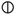
[nitrum]. Ces symboles manifestent comme l'asymptote tripartite qui limite « de l'extérieur » la dissolution. Autrement dit, la limite du champ de vision que nous pouvons appréhender sur notre MOI intérieur. Cette limite est figurée, dans le schéma, par les parenthèses {-}. Ainsi, les éléments situés immédiatement près de ces parenthèses sont constitutifs du début de la dissolution et, en cela, s'inscrivent dans le plan de la grandeur intensive. Dès lors, on remarque que le processus alchimique consiste à réaliser la transformation d'un RÉEL [non réalisé en tant que non idéalisé] en un ÊTRE de raison. Le produit de cette transformation est ce qu'on appelle, en philosophie, un EN-SOI. Bien entendu, tout donné ne peut accéder au statut d'en-soi et la limite qui s'impose est la forme nouménale que peut revêtir, dans notre psyché, la réalité. C'est au niveau même de cette limitation [à l'interface conscient ¦ inconscient] qu'opère le concept de grandeur intensive. Nous sommes ainsi logiquement conduits à introduire dans notre schéma le concept de grandeur infinitésimale, car élaborer la signification critique de la réalité ne peut se faire que grâce à la notion d'intensité infinitésimale [le principe de la méthode infinitésimale et son histoire, Hermann Cohen, Marc Buhot de Launay, p. 50, Vrin, 1999]. La dynamique est introduite au moyen de l'anticipation qui s'articule à l'intuition intellectuelle. La question est à présent de savoir ce que recouvrent les deux principes élémentaires {,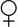
} au plan conceptuel ; pour cela il est nécessaire de revenir sur la figure du processus alchimique qui appelle deux ordres de commentaire :
Mercurius saepius
sublimatus... [Musaeum hermeticum, 355] - Bacstrom delincavit
et un corrélat
:
On peut ainsi considérer
qu'il s'agit à ce stade de la vision - plutôt que de la représentation -
intuitive d'un donné.
2.
forme et substance en tant que
prolégomènes d'un donné
Le schéma du processus
alchimique est articulé - si l'on considère la théorie hermétique - sur
trois plans. Ce schéma ne peut faire suggérer - il serait alors
redondant - que le SUJET n'est jamais que l'envers de l'OBJET
; qu'il n'est ainsi représenté sous forme duale que faute de mieux.
Enfin, comme je viens de l'expliciter à la fin du dernier §,
il convient, à l'interprétation symbolique,
d'apposer une détermination conceptuelle. Le mixte spirituel ainsi réalisé
constitue une « dualité réversible » au sens dynamique.
Nous tenons ici les éléments permettant d'élaborer par la dialectique
{sujet <--> objet} une genèse de la temporalité. Au symbole,
joignons le signe et au concept, joignons le Verbe. La relation du Logos
au Verbe s'établit via une organisation dynamique qui renvoie à une
révolution : en alchimie, cette révolution s'appelle la nigredo
et elle reflète les rapports dynamiques entre le couple{transcendance /
sujet} d'une part et le couple { / } d'autre part. On remarque d'abord que la sujétion
transcendantale opère un infléchissement ou dérivation du signe
en quoi consiste précisément la forme du symbole. Il convient donc de
rechercher dans un premier temps des figures archétypales - pour
reprendre la terminologie de Jung - susceptibles de nous apporter des
informations sur ce que peuvent représenter « forme et substance »
envisagés au plan hermétique. Examinons d'abord la partie SUJET. Le
SUJET tel que nous l'avons dépeint {,} est représenté par
deux symboles qui apparaissent hautement composites. Ainsi serons-nous
d'abord conduit à réinterpréter entièrement le fond éidétique qui
sous-tend l'idéogramme de Mars .
Nous suggérons que l'idéogramme représente le symbole de l'ingrès
solaire dans le Bélier. Ou plus exactement qu'il correspond à
l'instantané dynamique de l'ingrès : à ce titre on peut considérer un
idéogramme antérieur qu'il convient de relier à une véritable
constellation mythologique. De cette constellation émergent les
anciennes figures de Thamuz, d'Ishtar ; celles plus récentes d'Adonis et
du sanglier de Calydon. Ce sanglier va nous arrêter dans un premier
temps : il est assimilable au caledonium monstrum chassé des
forêts écossaises, que Ptolémée nomme καληδονιοσ δρυμος [Salomon
Reinach, Cultes, mythes et religions, t. 1, p. 260, Leroux, 1905].Pour
Reinach [ibid. t. 3, p. 177] le dieu-sanglier n'est autre que Mars. Dans
l'iconographie alchimique, on a cette gravure de l'Atalanta
fugiens :
/ } d'autre part. On remarque d'abord que la sujétion
transcendantale opère un infléchissement ou dérivation du signe
en quoi consiste précisément la forme du symbole. Il convient donc de
rechercher dans un premier temps des figures archétypales - pour
reprendre la terminologie de Jung - susceptibles de nous apporter des
informations sur ce que peuvent représenter « forme et substance »
envisagés au plan hermétique. Examinons d'abord la partie SUJET. Le
SUJET tel que nous l'avons dépeint {,} est représenté par
deux symboles qui apparaissent hautement composites. Ainsi serons-nous
d'abord conduit à réinterpréter entièrement le fond éidétique qui
sous-tend l'idéogramme de Mars .
Nous suggérons que l'idéogramme représente le symbole de l'ingrès
solaire dans le Bélier. Ou plus exactement qu'il correspond à
l'instantané dynamique de l'ingrès : à ce titre on peut considérer un
idéogramme antérieur qu'il convient de relier à une véritable
constellation mythologique. De cette constellation émergent les
anciennes figures de Thamuz, d'Ishtar ; celles plus récentes d'Adonis et
du sanglier de Calydon. Ce sanglier va nous arrêter dans un premier
temps : il est assimilable au caledonium monstrum chassé des
forêts écossaises, que Ptolémée nomme καληδονιοσ δρυμος [Salomon
Reinach, Cultes, mythes et religions, t. 1, p. 260, Leroux, 1905].Pour
Reinach [ibid. t. 3, p. 177] le dieu-sanglier n'est autre que Mars. Dans
l'iconographie alchimique, on a cette gravure de l'Atalanta
fugiens :
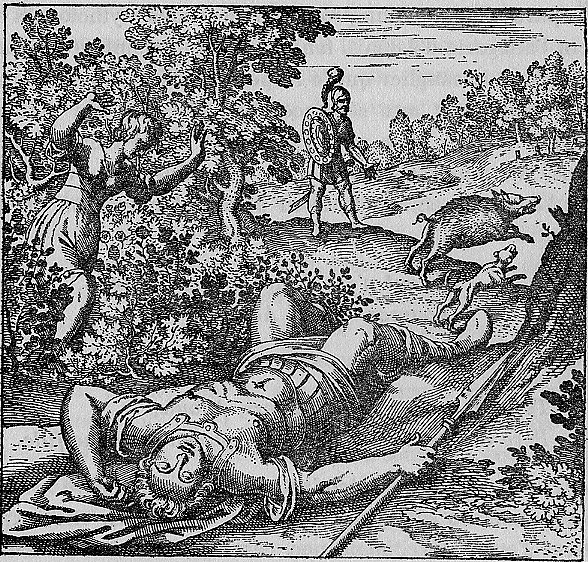
L'interprétation
hermétique tient compte d'éléments astronomiques, mythologiques et bien
sûr, alchimiques. Le sanglier est une hypostase du
dans son premier état ; indomptable, insoumis au sortir des gîtes
métallifères (symbolisés habituellement par la forêt), il contracte des
rapports évidents avec Mars (ερρωος
: le Bélier, le sanglier). Le Bélier s'intègre au signe hiéroglyphique
de Mercure (cf. Monade
hiéroglyphique de John Dee). Passons à Adonis : il
représente le Soleil selon Macrobe [Saturn., Lib. I, cap. 21] et comme d'autre dieux et
déesses, il est soumis de façon cyclique à la Passion et à la
Résurrection ; ces cycles étaient vénérés dans des fêtes, les
Adonysies, qui duraient sept jours [cf.
Victor Bérard, De l'origine des cultes arcadiens, le dieu fils
des phéniciens, p. 251, Thorin, 1894]. V. Bérard ajoute
qu'Adonis, sous d'autres figures [Eshmoun,
Melqart], n'a au fond constitué qu'un même Dieu fils sous
trois faces [forme terrestre, céleste et
infernale]. Ces trois faces nous intéressent : elles ne sont
pas sans rapport avec les éléments de Platon. On peut aussi noter que
la forme infernale du Dieu-fils évoque un antécédent lointain de Mars
: Nergal, le dieu mésopotamien des Enfers. Il est décrit comme un lion
ailé (chimère avec des ailes de griffon) ou un coq qui annonce l'horo aura. Au plan alchimique, on
peut y voir un parallèle avec le lion vert (Mercure double) avant le
tout début de la période d'assation (où
il se transforme en lion rouge, cf. Douze
Clefs du pseudo Basile Valentin). On doit noter
également les rapports entre Nergal et Héraclès : à Palmyre où une
tessère (tessera) porte sur une face la massue d'Héraclès et sur
l'autre, le nom du dieu babylonien Nergal. D'autres tessères
appartiennent à un couple formé d'un dieu à la bipenne et au lion (la
bipenne traduit la massue à double protome qui est l'arme ordinaire de
Nergal). Henri Seyrig [in Syria, xxiv, 1-2, 62-80, 1944] se livre à un
développement sur les rapports entre Heraclès et Nergal ; Nergal est
en effet assimilé par les anciens babyloniens à la planète Mars [cf. Bouché-Leclercq, Astrologie grecque, 41],
d'où l'intérêt de cette possible assimilation effectuée à Palmyre ou
de façon plus générale par les Grecs d'Orient. Seyrig poursuit par une
figure de liaison qui serait la charnière entre Héraclès et Nergal,
Melqart, ce qui explique que le sanctuaire de Tyr était consacré à la
planète Mars (i.e. Nergal). Ce syncrétisme vaut la peine d'être étudié
dans ses rapports à l'hermétisme et à l'alchimie. Voyons d'abord
Nergal comme dieu des Enfers ; le symbolisme est superposable à celui
d'Adonis. Descendu aux Enfers, Nergal force la déesse des morts à
l'épouser et par là même est le garant, le héraut, du renouveau
solaire, c'est-à-dire de l'aurore de l'année (et non plus seulement de
l'aurore du jour). Le même symbolisme entoure Melkart, dieu de Tyr et
notamment dans la période de février et mars qui nous intéresse. Le
point marquant qui semble expliquer la liaison entre Melqart, Nergal
et Héraclès réside dans son activité de « tueur de fauves » et
précisément de tueur de lion. C'est évidemment ici que se fait le
trait d'union avec le symbolisme alchimique (lion vert, lion rouge) sur lequel nous n'avons plus
besoin d'insister (cf. symboles),
en particulier avec les opérations liées au double Mercure (mercurius
senex). Un autre point de liaison procède de la symbolique
forte de Melqart, dieu soleil ou incarnation du soleil ; l'Hercule
tyrien est représenté ainsi comme un vrai dieu soleil, maître du feu
et conduisant dans le ciel le cercle de l'année aux douze mois. Ce
n'est pas tout : Apollon et Héraclès sont associés comme Gémeaux et
cette constellation passe pour une hypostase de Nergal ; c'est là
encore une image solaire tout autant qu'un signe de feu : Les
Chaldéens et les Babyloniens vénéraient Nergal comme l'image d'un
homme-lion ailé.
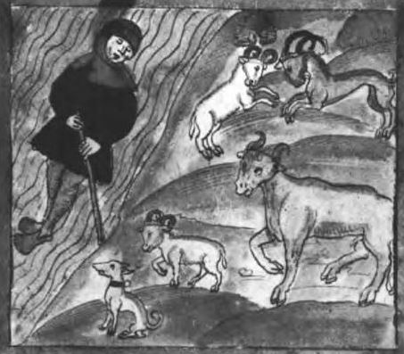
Gardons à l'esprit que nos constellations - si l'on tient compte de la précession des équinoxes - ne sont plus superposables à celles des Assyriens ou des Babyloniens [le point vernal coïncidait alors avec le signe du Bélier] ; nous ne faisons donc référence explicitement qu'au franchissement du point vernal par le Soleil en référence à l'année tropique [i.e. l'équinoxe de printemps]. L'allégorie du point vernal, en ce qu'elle touche à la fois le Soleil, Mars et le Bélier, touche au fait de « desceller l'âme », c'est-à-dire en termes hermétiques, de correspondre à l'époque du travail où débute la sublimation [pensons au lien du Mercure, si bien représenté par l'une des gravures de l'Arcana arcanissima de Maier; revoyons les gravures du Rosarium philosophorum]. Fulcanelli a parfaitement représenté cette époque en la comparant à un objet qui serait blanc sur une face, noire sur l'autre et violet dans sa section : c'est nommer l'ιον alchimique. Cet objet qui regarde constamment la lumière est la terre
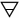
envisagée comme principe principié [revoir ici ce que Chevreul écrit sur Artephius].J'ai insisté sur l'importance
de la distinction des prolégomènes schématiques : les grand symboles
alchimiques, en particulier ceux représentant les planètes, sont en
quelque sorte isomorphes si on se les représente en tant que
détermination d'une forme ou d'une substance. Cet isomorphisme est la
conséquence d'une symétrie de figure [le
cas de la est particulier mais se résout
à une symétrie]. En revanche, cette symétrie n'est pas
retrouvée pour ; et c'est ce qui nous a
amené progressivement à développer le projet d'une nouvelle monade [par relation avec la Monade
hiéroglyphique de John Dee]. J'ajoute que cette symétrie
se remarque également pour {, } via un artifice que j'expose au § suivant.
Monas hieroglyphica [Antwerp, 1564] est un ouvrage réputé difficile, qui se propose littéralement de révéler au monde des connaissances extensives exclusivement par l'interposition d'une symbolique de groupe. A la vérité, on n'est pas si loin que cela du cercle fichtéen qui propose pas moins que la science du monde par l'exposition de la doctrine de la science [cf. A. Philonenko, la Liberté humaines dans la philosophie de Fichte, Vrin, 1966, sur la Wissenschaftlehre de 1801]. Le registre est différent et le fond est superposable : 237 ans de distance ont changé la nature paradigmatique du discours. Pourtant, la lecture dévoile un élément qui n'a pas changé et qui s'est transmis : la dynamique. C'est-à-dire une certaine formulation de la temporalité où, précisément, l'élément symétrique joue un rôle de premier plan dans la genèse psychologique du temps. Dans le cadre de notre vision hermétique, cette formulation va passer par une sorte de métaphore gnomonique où le cadran solaire (gnomon) va être étendu à l'éventail planétaire et donner lieu à une représentation double ; en voici l'index :
, }
;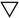
, etc.) ; ; énantiomérie des opérations
sublimation ↑ et projection ↓ ;Ces développements ont nécessité dans un premier temps de ne plus conserver de liaison entre et comme il est coutume de l'établir dans la symbolique traditionnelle ; on peut certes à un autre niveau conserver les symboles par référence à un sel de vitriol ou à une base comme la chaux. Mais je le répète, on peut aller beaucoup plus loin dans la formulation en ne modifiant que peu de chose aux symboles eux-mêmes.
Le cercle rayonné est l'un des premiers états symboliques ; nous lui apposons l'ingrès solaire perpétuel par extension du domaine de comme allégorie du point vernal. Cet ingrès solaire peut être expliqué en faisant intervenir la notion de cercle terminateur, les deux points du jour où, pour l'hermétiste, s'affrontent le loup et le chien : on les aperçoit sur l'emblème LXVII de l'Atalanta fugiens.
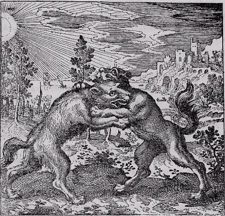
Soit un cercle trigonométrique (de rayon 1) OM, l'angle AÔM est inférieur à π/4 ; il suit que la tangente de AÔM = AT et la cotangente = BC ; considérons l'intersection de l'axe horizontal (cotan) et de l'axe vertical (tan). La droite menée jusqu'en C est alors l'un des côtés du quadrilatère dont l'hypoténuse est TC. L'axe de cette flèche est la droite MC. Notons quelques restrictions, imposées par construction :
- MC doit être inférieur à
1 ;
- TC doit être inférieur à MT ( et TC ≠ 0)
Par ailleurs, on mène la normale à OM qui coupe OA et OB en deux points définissant la sécante OF et la cosécante OE.
On définit alors les segments
de flèche GC et CH ce qui « reconstitue » le symbole de Mars.
Il est temps à présent de
revenir sur ce que représente Mars au plan hermétique ; on a vu qu'y
étaient associées les notions d'unité et de volonté. Il est possible
d'être plus précis :ces notions peuvent être amplifiées et remplacées
par les concepts de force et de pouvoir, concepts satellites d'une
entité métaphysique rayonnante : la virtus
infusa. [cf. Henri Gouhier, Blaise Pascal Commentaires, p. 52,
Vrin, 1984]. En liaison avec le processus alchimique, il se
dégage ainsi la possibilité d'un véritable « ensemencement » spirituel
où nous pouvons voir à l'oeuvre le mercure philosophique : cette virtus infusa, qu'en théologie on
assimile à une
« vertu théologique ... versée par
Dieu même dans les âmes » [cf.
Jacques Maritain, Raïssa Maritain, oeuvres complètes, t. VI p. 217, Science et sagesse, Editions Saint Paul, Paris, 1984].
est, en alchimie, le moyen de dissoudre les opposés afin de les mieux
conjoindre, radicalement, par après : la dissolution est la solution de
la conjonction (virtus mineralis).
Que le lecteur revoit ici les écrits d'Artephius [Livre
secret, p. 23, in Philosophie naturelle de trois anciens philosophes renommez
Artephius, Flamel & Synesius, Laurent d'Houry, 1682].
Comment associer la dissolutio à
la virtus ? N'y a-t-il pas
comme une sorte de contradictio in
adjectio ? Tel est le sens hermétique à discuter. En chimie
ancienne, on sait que des corps, doués d'une vertu attractive et comme
incisive, parviennent à en dissoudre d'autres et que, du reste, la
dissolution peut se signaler par une précipitation [de
tout cela nous avons déjà traité dans la section chimie
et alchimie]. Le cas que nous avons à étudier est plus
complexe puisque nous abandonnons le terrain physique pour le monde
métaphysique. Sur le plan purement moral, c'est un truisme que d'énoncer
que la dissolution s'oppose à la vertu, et cela plus sûrement en
tempérant le mal qu'en attendant le bien : autrement dit, il existe une
sorte de pression qui joue comme un « frein modérément serré » afin de
faire pencher la balance du côté du bien : on tâche ainsi de rendre la
vertu opportune - comme par hypocrisie plus ou moins consciente - en
sachant le mal prégnant. Ainsi sommes-nous amenés à distinguer :
- le souverain bien (assimilé
à la vertu par Kant) ;
- le mal radical (qui a fait l'objet de la section
I de philosophie et alchimie) ;
Mais cette distinction est, à
la base, parasitée et entachée d'ambiguïté du fait de cette prégnance
qui a nom : le mal du mal [cf. Ricoeur, le conflit des interprétations, essais
d'herméneutique, p. 411, 1969, Seuil]. L'analogie peut
être trouvée là encore dans le crépuscule où l'âme erre en pénombre, au
royaume de Seth. La relation à Seth est d'importance : il a été
identifié à Typhon et souvent représenté par un sanglier noir dévorant
la lune [à l'instar du lion dévorant le
soleil]. Revoyez ici l'emblème XLI
de l'Atalanta fugiens où l'on
peut remarquer ce rapprochement entre Mars et l'un des symboles du mal [sanglier = Seth].
Seth-Typhon est avant tout le « dieu de la confusion » [cf.
H. Te Velde, Seth, God of confusion.
A study of his role in Egyptian Mythology and Religion,
Leiden, 1967] ; Kerenyi en parle comme de «
l'ennemi des confins », «
l'esprit du désordre » et insiste sur le thème omniprésent de
la tempête. Mais assez curieusement, on lui prête non moins des traits
bénéfiques : il combat le serpent Apophis et donne ainsi la voie libre à
la barque du soleil, menacée par le monstre [cf. Seth, Osiris et
l'ethnographie, Ugo Bianchi, revue de l'histoire des
religions, 113-135, 179, 1971]. Enfin, Seth contracte des
rapports avec les métaux, puisque selon Plutarque [De Iside, 62], le fer
serait les ossements de Seth qui atteint par là à un niveau cosmique,
quasi démiurge et même Prométhée : relevons que la mythologie rejoint
singulièrement les données de la cosmologie moderne puisque le fer
présent sur la Terre, présent dans notre hémoglobine, a été
littéralement forgé au sein de la supernova dont l'explosion a donné
naissance, voici plusieurs milliards d'années, à notre système solaire.
Ce n'est pas tout : Seth est réputé avoir détruit le puits qui donne une
nouvelle jeunesse au corps [nigredo]
; c'est donc d'une ambivalence radicale que se prévaut la figure de
Seth-Typhon, laquelle aboutit historiquement à une véritable
identification avec le mal. On peut relever d'autres caractères de Seth
qui vont dans le droit fil de la tradition alchimique ; ainsi dans le
couple d'opposés {noir - rouge}, Seth se voit attribuer le « pays rouge
», désert et stérile alors qu'à Osiris échoit la terre noire de
l'Egypte, fertile et humide. On pourrait dans une certaine mesure
deviner certains traits de Zeus dans la formulation symbolique sethienne
: dieu rouge du tonnerre, lié au ciel orageux. Je citerai enfin ce
passage qui met bien l'accent sur le caractère de vicissitude originale
et cyclique de Seth :
« ... il est utile de souligner
que, parmi les dieux de l’Ennéade, les quatre dieux Osiris, Isis,
Seth, Nephthys sont ... des « dieux en vicissitude », typiques des
cultes de fertilité saisonnière ... Ce caractère a été parfaitement
perçu par Plutarque, quand il a classé ces quatre dieux parmi les
daimones, êtres divins mais sujets au « devenir » (expression
philosophique platonicienne qui s’adapte bien au concept de la «
vicissitude » propre à ces dieux). » [Ugo Bianchi, op. cit., p. 130, note 2]
Cette vicissitude nous semble
clairement annoncer la « prégnance » du mal que nous évoquions supra.
Cette prégnance est, au plan mythologique, comme préservée par Isis, qui
empêche que Seth-Typhon, le principe de sécheresse, ne soit anéanti
(bien qu'étant mortifié) : Plutarque, à cet égard, identifie les
concepts de titanique et de typhonique en relation avec l'esprit «
démonique » de violence, c'est-à-dire avec l'élément irrationnel dans
l'homme [cf. Platon, Lois, 701 C].
« Bérose ... n’hésitait pas à
expliquer le vieux mythe mésopotamien de l’humanité, faite à partir du
corps du monstre primordial et du sang d’un dieu, par la doctrine
grecque de l’appartenance divine du nous qui est dans l’homme. »
[ibid, p. 133]
Pour en revenir à Osiris, une ancienne légende le fait tuer par un sanglier, comme Adonis (cf. emblème XLI de l'Atalanta fugiens) ; Typhon [Seth] est guidé par un sanglier jusqu'à Osiris et il découpe son corps en 14 morceaux qu'il disperse [cf. Jean Hani, la religion égyptienne dans la pensée de Plutarque, Paris, les Belles Lettres, 1976]. Au-delà du mythe, il reste que :
«
... Ici Plutarque emploie avant tout l'exégèse théologique et
mystique, d’inspiration platonicienne, qui prépare celle des
néoplatoniciens et néopythagoriciens ... Plutarque ne se contente pas
de dire qu’Osiris est le Nil ou la puissance génératrice qui s’unit à
la terre ou à Isis et auxquels s’oppose Typhon, qui est à la fois
l’aridité du désert et la mer dite stérile (les lacs du delta). Ce
serait confondre les actions des dieux avec les dieux mêmes, et le
dualisme des éléments avec celui des principes. Ce serait oublier que
ce conflit se retrouve dans le drame de la destinée humaine. Car
l’homme lui-même est double, et l’initiation consiste à dégager
l’élément divin ou osirien de la partie mauvaise ou typhonienne en
revivant la passion du dieu et en anticipant sa mort (Téleutè :
télétè).
Selon
Plutarque, cette lutte de la lumière et des ténèbres, de l’ordre et du
chaos, apparaît chez Platon dans le Timée 35 a comme l’opposition du
même et de l’autre et comme celle des deux âmes dans les Lois 896 d.
Mais le principe du mal n’est pas le mal absolu, il est nécessaire à
l’équilibre du monde et à sa complétude. Sans le chaos primordial
Osiris demeurerait immuable et infécond. Car tandis que son âme
éternelle signifie la transcendance de l’Être, de l’Intelligence et du
Bien, le démembrement de son corps symbolise la procession et la
division des formes qui pénètrent la nature corporelle ou Isis. Il y a
dans le mythe égyptien une antériorité de la Nuit originelle, sans
laquelle le soleil ne serait pas né. » [cf. Jean Trouillard, in revue philosophique de Louvain,
Comptes rendus, philosophie de l'Antiquité, pp. 103-104, 77, 1979]
ms Harley, 2407, xve
siècle, f. 68
Il semble donc qu'une dualité
primordiale soit à la base de la conception du dieu Seth ; Seth ennemi
d'Horus, mais Seth aussi assistant de Rè [Osiris]
dans la barque solaire. On a retrouvé cette double origine par le biais
d'un parallèle égyptien à la légende du géant Antée [cf. P. Barquet, in revue de l'histoire des religions, pp. 1-12, 165,
1964]. Antée apparaît comme « l'adversaire » qui tire de sa
mère la Terre des forces toujours renouvelées : il est assimilable à un
serpent « celui qui est sur sa montagne » et « celui qui est dans sa
flamme » : on lui donne le nom d'Apophis, l'adversaire de la barque
solaire qui déroule ses anneaux pour la faire chavirer et l'empêcher
d'entrer dans le monde souterrain [ibidem,
p.4 et note 2]. Ce serpent représente l'incarnation de la peur
innée des hommes devant les ténèbres de la nuit et :
« ... il représente, à lui seul, les
Esprits de la terre (les Akerou), génies hostiles que Seth est chargé
de réduire. Détail intéressant : il tire sa force de sa montagne ;
cette force de la nature, purement physique et brutale, sera mise en
échec par la puissance spirituelle de Seth, comme celle d’Antée le fut
par le courage intelligent d’Héraclès.
Une différence importante subsiste toutefois entre le serpent géant et
Antée ; jamais, à notre connaissance, ce dernier n’est décrit comme un
serpent, ou même simplement comme un géant anguipède. On peut penser,
cependant, que le serpent du mythe égyptien représente, non seulement
Antée, mais aussi le serpent ou dragon Ladon, qui gardait les pommes
d’or du jardin des Hespérides sur le bord occidental du plateau de
Cyrénaïque. » [ibid, p. 6]
On mesure la proximité du mythe avec les légendes hermétiques... Mais le point intéressant est l'étymologie de Ladon : « celui qui sépare le domaine céleste du domaine terrestre », autrement dit qui donne naissance à une épiphanie de limitation : Antée et Ladon matérialisent comme une limite qui ne peut être franchie sans risque. Autre point : Seth est « celui qui soulève la force ». Voilà encore un trait qui nous rapproche des attributs hermétiques « orthodoxes » de Mars ; ne peut-on pas deviner dans la flèche martienne l'un des attributs de l'archer Héraclès ? Ne voit-on pas que tout le symbolisme qui s'y rattache est imprégné de FEU par l'allusion entre autre à la peau de lion ? Seth est aussi le dieu qui permet ce miracle : conserver en vie Rè qui disparaît dans la nuit, c'est-à-dire dans le néant. N'est-ce pas ce que réalise l'alchimiste quand il dissout le sulphur dans le mercurius ? Nous revenons à la question initiale qui consiste en l'assimilation de la dissolutio à la virtus. Par assimilation, nous entendons conjonction, réunion radicale et même confinement : c'est donc, pour ainsi dire, une inter-action forte qu'il s'agit de défaire quand on s'essaye à dégager les traits du Bien et du Mal des concepts plus évolués - parce que plus élémentaires ou radicaux - de dissolutio et de virtus. Confrontés ici à l'insécabilité, nous sommes par là-même confrontés à l'Absolu ce que l'on peut résumer à la limite par bonum sive virtus pour parodier le causa sive ratio ou causa sui [cf. E. Gilson, J.-L. Marion, V. Carraud]. L'homme tragique n'est pas loin en sa condition de « juste pécheur » de cette image insécable, de cette double figure, de ce masque à la Janus. En sa qualité de passeur, le dieu Janus peut-il nous aider à franchir cette limite que nous avons évoqué par la référence à Antée ? Oui si nous rappelons sa qualité de dieu introducteur, c'est-à-dire au lieu des renouveaux. Renouveau du temps : il possède l'attribut de la clef, c'est le portier ou ouvreur ; renouveau de l'espace par l'attribut qu'on lui fait du bâton qui signale le voyageur ou pèlerin au bourdon. Renouveau du monde puisque Janus était réputé identique au Chaos [peut-être sur la base d'une étymologie fantaisiste : Janus = Hianus] : il est l'origine et la cause première du monde [cf. R. Schilling, Janus. Le dieu introducteur. Le dieu des passages, Mélanges d'archéologie et d'histoire, 89-131, 72, 1960] et la cause - ou l'initiative - de l'ensemencement. Par ailleurs, quand Horace [Satires, II, 6, 20] appelle Janus Matutine Pater, on évoque l'aurore crépusculaire : s'agirait-il du « gond du jour » ? Autrement dit, nous sommes amenés à considérer que Janus est le symbole du terminateur - i.e. la calende du jour - pris au sens cosmographique du terme. Car Janus patronne les calendes de tous les mois de l'année (en association avec Junon) et il n'est pas surprenant qu'il puisse de même contrôler les calendes nycthémérales. L'association à Junon - ou plus sûrement à Diane [Diana lucifera] - vaut pour la sygyzie lunaire qui complète de ses cadences mensuelles l'invariable ballet crépusculaire. Junon se fait pour ainsi dire parèdre de Diane aux cornes lunaires grâce à la « vitalité exaltée » dont elle est dépositaire aux périodes calendaires.
Revenons à Janus et à ses rapports avec Mars : Janus Geminus signale un culte associé au sanctuaire le plus ancien du dieu à Rome, en un temple qui contenait la statue à double figure ou sacellum. Ce temple était ouvert ou fermé selon l'état de guerre ou de paix [cf. Schilling, op. cit., 114].
Dans le Latium d'Hespérie
régnait une coutume, qui aussitôt devint sacrée
pour les cités albaines, et qu'aujourd'hui Rome, puissante entre
toutes,
respecte, lorsqu'elle ébranle Mars au début des combats,
que l'on se prépare à porter la guerre et ses larmes chez les Gètes,
ou chez les Hyrcaniens ou les Arabes, à partir pour les Indes,
à poursuivre l'Aurore ou à reprendre aux Parthes leurs enseignes.
Il existe deux portes de la Guerre (c'est leur nom),
rendues sacrées par la religion et la crainte qu'inspire Mars le
redoutable;
cent verrous d'airain les ferment, et des fers d'une résistance
infinie,
et Janus, leur gardien, ne s'éloigne pas de son seuil.
Virgile, Aeneis, VII, 601-610
Le démon Bellum
est enfermé dans ce temple et Janus est considéré, dans le
Latium primitif, comme le dieu véritable de la guerre. Ainsi Mars
n'apparaît-il plus que comme un symbole de la bataille, c'est-à-dire de
l'action et perd-il tout sens de personnalité divine [cf. Apollonios de Rhodes
et Virgile, etc. , Henri de La Ville de MirMont, 587 sq.,
Hachette, 1894]. en ce sens il est possible de réinterpréter la
flèche de Mars comme un vecteur force dont le moment est nul : cette
nullité est gagée par « Cent verrous
d'airain et des barres de fer à l'épreuve du temps » qui
ferment les deux portes de la guerre. Junon appliquera la force
nécessaire pour ouvrir les portes qui retiennent Bellum [Aeneis, VII, 622].
Janus en tant que dieu des passages, dieu des transitions ainsi que dans
ses fonctions d'intermédiaire possède une vertu hermétique d'ordre
mercuriel. Il semble intéressant de lui apposer le symbole comme anima
consurgens. Cette analogie symbolique se base sur l'idée que
Janus, s'il exprime le « passage d'un lieu dans un autre », exprime
aussi la transition d'un état dans un autre, autrement dit la
métamorphose, la transmutation de l'ombre à la lumière. Deux états
complémentaires : jeu d'ombre et de lumière qui évoque le tenebroso de R. Barthes [l'Homme
racinien, Club français du Livre, 1960] ou plutôt
n'est-ce pas là une ombre indivise que dessinent les astres réunis en un
ballet éternel ? Et notre conscience n'introduit-elle pas, à l'aide de
la grâce, comme une dramatisation de l'espace ? L'image des planètes que
le soleil fige d'ombre, par la brisure du terminateur, introduit un
conflit d'éternité où l'ombre se pénètre soudain d'éclat, mais non pas
comme l'écrit Barthes, que l'ombre soit transpercée de lumière ; non,
bien plutôt, l'ombre est soudain corrodée :
«
... c'est l'atome fragile de durée où le soleil fait voir la nuit sans
encore la détruire, qui constitue ce que l'on pourrait appeler le
tenebroso racinien. Le clair-obscur est la matière sélective... »
[l'Homme
racinien, p. 127]
Il y a deux façons d'appréhender ce clair-obscur : in vivo, aux lueurs crépusculaires ; par expérience de pensée ou lorsque par la magie du télescope, du satellite, nous accédons aux phases des planètes, qui ne sont après tout que des observables de notre psyché : elles n'ont pas de réalité. En revanche, le faisceau d'ombre occultant les rayons solaires qui est dû à l'interposition d'un corps planétaire est réel [en tant qu'il est permanent, physique, fixe]. Ainsi, la trajectoire d'une planète en rotation apparaît-elle curieusement à l'observateur comme une sorte de « mouvement figé » indéfiniment répété. Le terminateur peut se définir exactement par le même mot qu'emploie R. Barthes quand il veut définir le terme de liaison entre les cendres et le bûcher :
« ... un échange toujours menaçant, mais jamais accompli, que Racine exprime par un mot propre, le verbe relever, qui désigne l'acte constitutif (et combien savoureux) du tenebroso. » [ibid]
Créateur de structure mythique par « pré-texte », Barthes aide à percevoir comment [pourquoi ?] le mythe hermétique gagne droit au concept.
Par delà cette analogie
cosmique, on devine la place occupée par le sulphur
et le mercurius
relativement au conflit de substances antinomique : aimant, acier,
combat des natures, telle s'énonce l'action tragique où la prima
materia passe au creuset, littéralement in
cruce.
On a pu écrire que :
« la nuit est identique à l'eau, car
l'obscurité du monde souterrain est semblable à celle qui existe au
fond des eaux profondes. C'est lorsque le Serpent de l'eau est tué par
l'Etoile du matin que le jour succède à la nuit, et si l'Etoile du
matin vient trop tard accomplir sa mission, l'eau submerge tout. »
[recension de Preuss Konrad,
L'expédition de Nayarit, recueil d'observations et de textes
recueillis chez les Indiens du Mexique. Tome I. La religion
des Indiens Cora, in l'Anthropologie, p. 110, t. 24, 1913]
Nous sommes renvoyés à
l'oeuvre de Philalèthe [l'Entrée ouverte
au palais fermé du roi ou Introïtus...]
et à l'Aurora consurgens avec leur
dédale de miroirs symboliques. Dans le petit monde des alchimistes, le
noir de l'eau c'est la putrefactio dont l'emblème est le serpent Ouroboros [cf. phil. et alch. 1].
C'est en somme l'eau permanente d'Artephius,
mondée du sulphur et acuée de son sel :
c'est nommer le mercure philosophique ou double mercure. Ce mercurius
possède bien la nature, l'essence des
eaux profondes minérales.
«
... Alors l’artiste divin dans cette œuvre philosophique verra la
première couleur où la teinture apparaît dans sa noirceur ; c’est le
noir le plus noir. Les savants philosophes le nomment leur corneille
noire ou leur corbeau noir ou encore le noir béni et bienheureux ; car
dans l’obscurité de ce noir, dans la propriété de Saturne, est
renfermée la lumière des lumières... » [in Jung, Psychologie
du transfert, le retour de l'âme, p. 168, Albin Michel, 1980]
Il s'agit, sous une autre
formulation, de la grande éclipse de Soleil et de Lune évoquée par le
pseudo Lulle. C'est une singularité symbolisée par l'ion alchimique . Jung y a vu la sublimité de l'inconscient ;
pour l'alchimiste, il s'agit de la conjonction de la sublimation et de
la projection, représentés par la bijection { ,
,  }.
L'hermétiste y devine le point de rosée.
}.
L'hermétiste y devine le point de rosée.